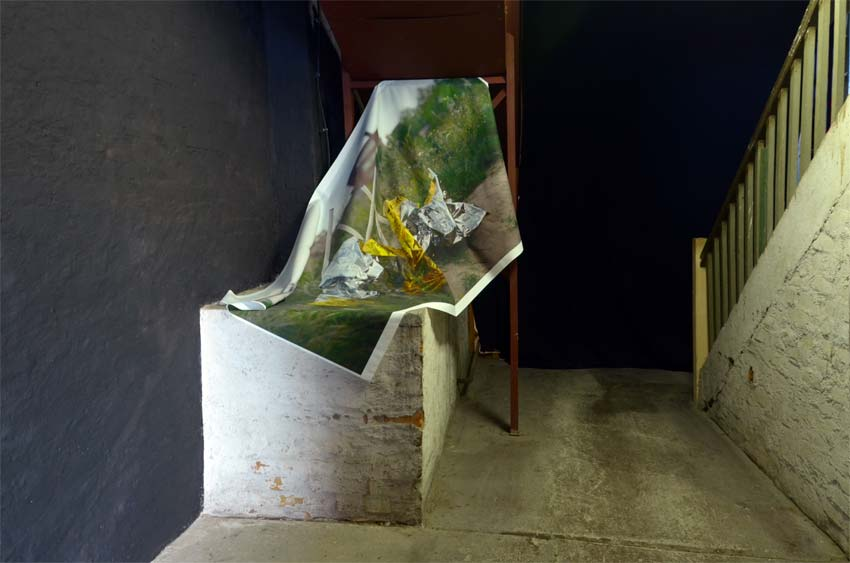
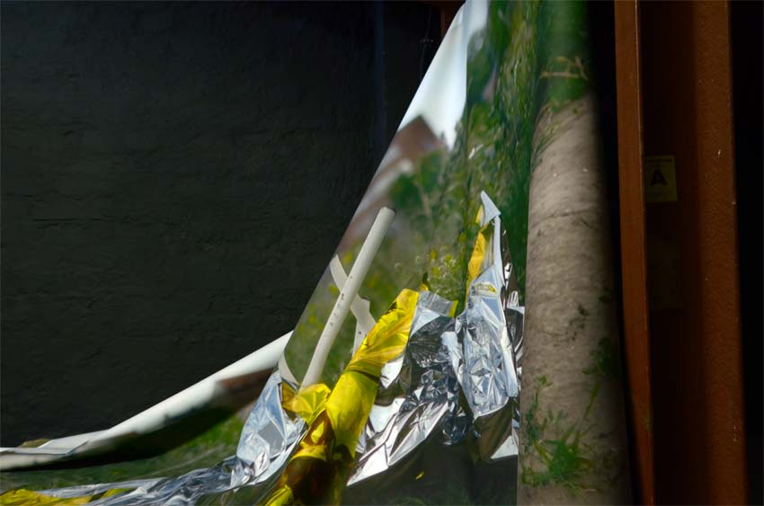
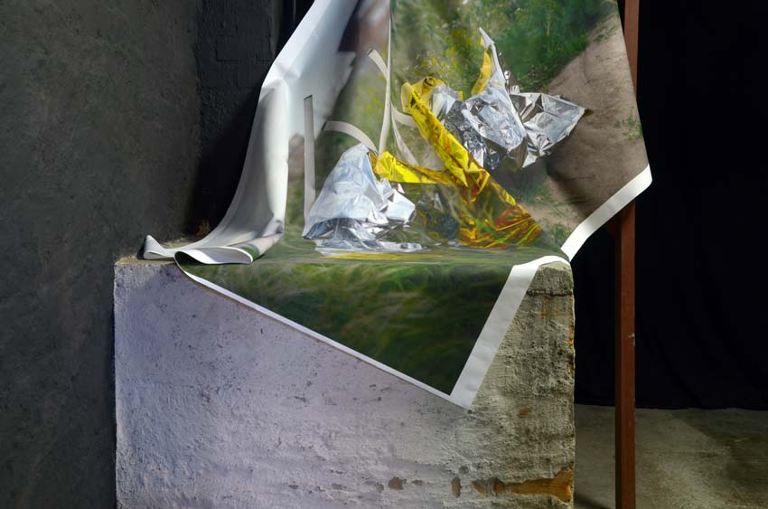
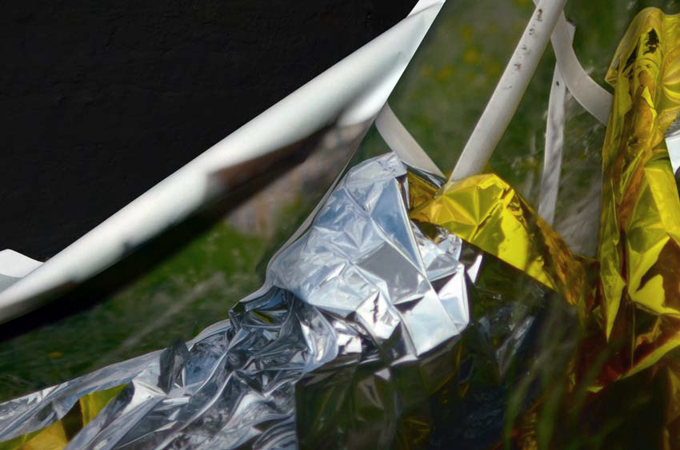
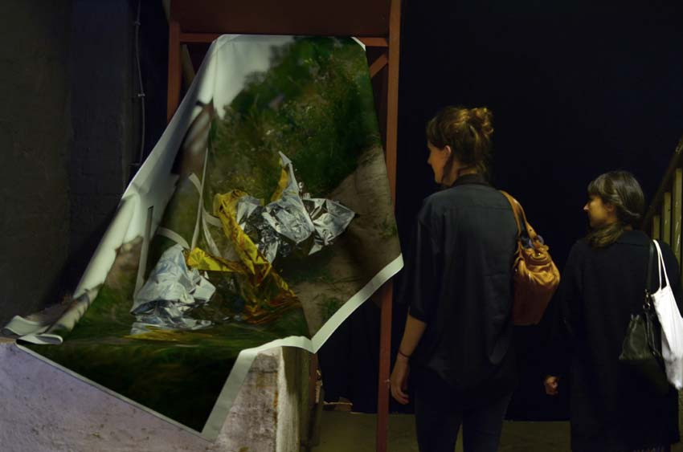

Jessica Arseneau
:: portfolio
Images et projets
Situé à l'entrée de la Galerie Bipolare, la pièce répond à l'architecture aux caractéristiques bruts. La photographie, ainsi, prend un vocabulaire sculptural et organique. L'installation traite de la relation entre le statut précaire et le terrain tout en se référant à l'histoire fictive de Jorge Luis Borges, Del rigor en la ciencia (1944). Borges décrit une carte qui a été mise à l'échelle exactement pouce par pouce à la province dont elle se réfère, et qui, au fil des ans, s'est détérioré en lambeaux. Parmi plusieurs interprétations de ce texte, l'allégorie de l'enveloppe et de la copie transmet ce désir de la maîtrise absolue de l'espace et son miroir.





Scale 1 : 1
2016
impression numérique sur toile et peinture latex sur mur
dimensions de l'impression: 132cm x 252cm
à Galerie Bipolar, Leipzig